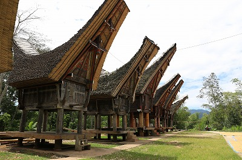
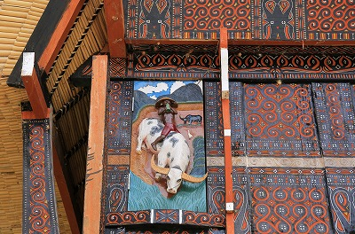
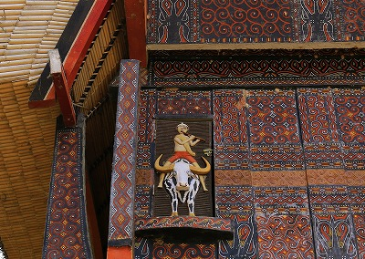
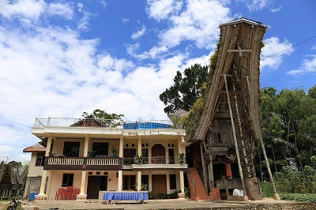
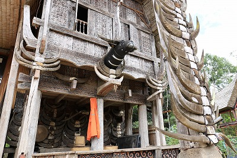
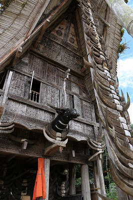
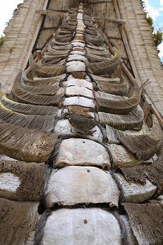
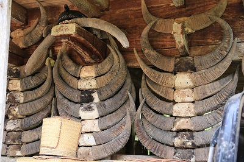
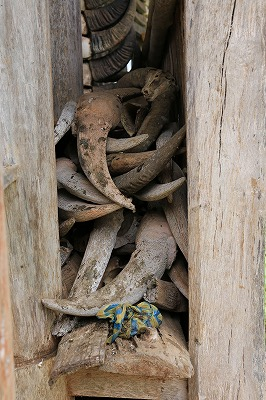
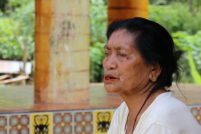

ブントゥ ド パサの旧家/Buntu Du Pasa
かつてトラジャの中でも伝説的に凄い葬式をしたという家を訪れてみた。
場所は中心部ランテパオの南西のブントゥ ド パサという村。
地名は聞き書きなのでスペルに自信ないです。

立派な米蔵がズラリと並ぶ。
なるほど中々の旧家なのだろう。

伝統的な紋様で覆われた壁は魔よけの意味もあるのだとか。

そして中に入る扉には水牛の様々なレリーフが。
多分この辺のクオリティでも家の格が細かく決まっている…ような気がする。
それにしてもホント水牛好きだよなあ。

その対面には近代的な立派な住居とメインのトンコナンハウスが並んで建っている。
住まいの脇に建つトンコナンは米蔵とは全く違う意味合いを持っている。

こちらのトンコナンハウスは元々母屋の役割を果たしていたのだろう。
しかし隣に近代的な住居を構えた今、象徴的な意味合いを持つ建物に昇華したともいえよう。

大屋根を支える柱にはびっしりと水牛の角が備え付けられていた。

この旧家、最近の葬式では２００頭もの水牛を生贄として屠ったとか。
確かにトラジャの色々な村落を周ってみたが、これほど水牛の角が掲げられた家はほかに見なかったな。

２００頭屠っただけあって柱だけに納まりきれず、高床のピロティ部分にもずらりと並んでいた。

さらに柱と柱の間にもぎゅうぎゅうに詰め込まれていた。
そこまで水牛屠った証が欲しいのか、とも思ったが、トラジャの社会では葬式に何頭の牛を屠って、どの位の人々にその肉を振る舞ったかがその家のステイタスを決める重要なファクターになっているのだ。

米蔵に座っている老女がここの家長だった。
これだけの大邸宅に一人で住んでいるのだろうか。周囲に人の気配はない。
もちろん米は小作人が作っているのだろう。
聞けば、１２人の子供がいて、その全員が世界中に散ってビジネスをしているという。
あるものはシンガポールで医者をし、あるものはアメリカで弁護士をしているという。
キンマ（※）をくちゃくちゃ噛み、時折真っ赤な唾をペッと吐くその姿からは想像もつかないような大金が毎月送金されてくるらしい。
キンマの噛みすぎで歯が数本しかない婆さんの仕事と言えば数分に一度庭に干した米をつまみに来るスズメを棒で追い払うのみ。
そしてまたキンマを口に放り込み口の中を真っ赤にしながら眠そうにゆったりとスズメを追い払う。
…こういうのを真のセレブと言うんだろうなあ。
※キンマ ； 檳榔樹の実と石灰を一緒に噛む嗜好品。東南アジアで広く使用されている噛みたばこのようなもの。
噛むと口の中が真っ赤になり、覚醒作用がある。
東南アジアではよく道端に吐き出されたキンマが落ちているが、一瞬血かと思うほど真っ赤っかで超ビビる。
台湾のセクシー檳榔売りは台湾ロードサイドの定番の風景だったが最近あまり見かけないねえ。
次へＧＯ！
トラジャ族の葬式と墓に戻る
珍寺大道場 HOME